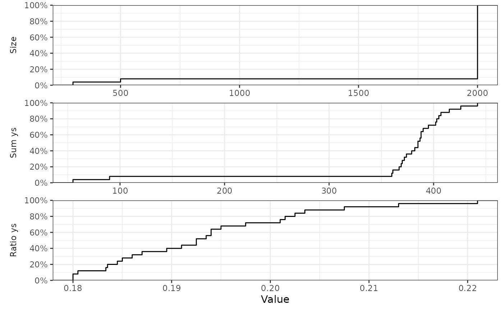

Plot empirical cumulative distribution functions of performance metrics
Source:R/plot_metrics_ecdf.R
plot_metrics_ecdf.RdPlots empirical cumulative distribution functions (ECDFs) of numerical
performance metrics across multiple simulations from a "trial_results"
object returned by run_trials(). Requires the ggplot2 package installed.
Usage
plot_metrics_ecdf(
object,
metrics = c("size", "sum_ys", "ratio_ys"),
select_strategy = "control if available",
select_last_arm = FALSE,
select_preferences = NULL,
te_comp = NULL,
raw_ests = FALSE,
final_ests = NULL,
restrict = NULL,
nrow = NULL,
ncol = NULL,
cores = NULL
)Arguments
- object
trial_resultsobject, output from therun_trials()function.- metrics
the performance metrics to plot, as described in
extract_results(). Multiple metrics may be plotted at the same time. Valid metrics include:size,sum_ys,ratio_ys_mean,sq_err,sq_err_te,err,err_te,abs_err,abs_err_te, (as described inextract_results(), with the addition ofabs_errandabs_err_te, which are the absolute errors, i.e.,abs(err)andabs(err_te)). All may be specified using either spaces or underlines (case sensitive). Defaults to plottingsize,sum_ys, andratio_ys_mean.- select_strategy
single character string. If a trial was not stopped due to superiority (or had only 1 arm remaining, if
select_last_armis set toTRUEin trial designs with a commoncontrolarm; see below), this parameter specifies which arm will be considered selected when calculating trial design performance metrics, as described below; this corresponds to the consequence of an inconclusive trial, i.e., which arm would then be used in practice.
The following options are available and must be written exactly as below (case sensitive, cannot be abbreviated):"control if available"(default): selects the firstcontrolarm for trials with a commoncontrolarm if this arm is active at end-of-trial, otherwise no arm will be selected. For trial designs without a commoncontrol, no arm will be selected."none": selects no arm in trials not ending with superiority."control": similar to"control if available", but will throw an error if used for trial designs without a commoncontrolarm."final control": selects the finalcontrolarm regardless of whether the trial was stopped for practical equivalence, futility, or at the maximum sample size; this strategy can only be specified for trial designs with a commoncontrolarm."control or best": selects the firstcontrolarm if still active at end-of-trial, otherwise selects the best remaining arm (defined as the remaining arm with the highest probability of being the best in the last adaptive analysis conducted). Only works for trial designs with a commoncontrolarm."best": selects the best remaining arm (as described under"control or best")."list or best": selects the first remaining arm from a specified list (specified usingselect_preferences, technically a character vector). If none of these arms are are active at end-of-trial, the best remaining arm will be selected (as described above)."list": as specified above, but if no arms on the provided list remain active at end-of-trial, no arm is selected.
- select_last_arm
single logical, defaults to
FALSE. IfTRUE, the only remaining active arm (the lastcontrol) will be selected in trials with a commoncontrolarm ending withequivalenceorfutility, before considering the options specified inselect_strategy. Must beFALSEfor trial designs without a commoncontrolarm.- select_preferences
character vector specifying a number of arms used for selection if one of the
"list or best"or"list"options are specified forselect_strategy. Can only contain validarmsavailable in the trial.- te_comp
character string, treatment-effect comparator. Can be either
NULL(the default) in which case the firstcontrolarm is used for trial designs with a common control arm, or a string naming a single trialarm. Will be used when calculatingerr_teandsq_err_te(the error and the squared error of the treatment effect comparing the selected arm to the comparator arm, as described below).- raw_ests
single logical. If
FALSE(default), the posterior estimates (post_estsorpost_ests_all, seesetup_trial()andrun_trial()) will be used to calculateerrandsq_err(the error and the squared error of the estimated compared to the specified effect in the selected arm) anderr_teandsq_err_te(the error and the squared error of the treatment effect comparing the selected arm to the comparator arm, as described forte_compand below). IfTRUE, the raw estimates (raw_estsorraw_ests_all, seesetup_trial()andrun_trial()) will be used instead of the posterior estimates.- final_ests
single logical. If
TRUE(recommended) the final estimates calculated using outcome data from all participants randomised when trials are stopped are used (post_ests_allorraw_ests_all, seesetup_trial()andrun_trial()); ifFALSE, the estimates calculated for each arm when an arm is stopped (or at the last adaptive analysis if not before) using data from participants having reach followed up at this time point and not all participants randomised are used (post_estsorraw_ests, seesetup_trial()andrun_trial()). IfNULL(the default), this argument will be set toFALSEif outcome data are available immediate after randomisation for all participants (for backwards compatibility, as final posterior estimates may vary slightly in this situation, even if using the same data); otherwise it will be said toTRUE. Seesetup_trial()for more details on how these estimates are calculated.- restrict
single character string or
NULL. IfNULL(default), results are summarised for all simulations; if"superior", results are summarised for simulations ending with superiority only; if"selected", results are summarised for simulations ending with a selected arm only (according to the specified arm selection strategy for simulations not ending with superiority). Some summary measures (e.g.,prob_conclusive) have substantially different interpretations if restricted, but are calculated nonetheless.- nrow, ncol
the number of rows and columns when plotting multiple metrics in the same plot (using faceting in
ggplot2). Defaults toNULL, in which case this will be determined automatically.- cores
NULLor single integer. IfNULL, a default value set bysetup_cluster()will be used to control whether extractions of simulation results are done in parallel on a default cluster or sequentially in the main process; if a value has not been specified bysetup_cluster(),coreswill then be set to the value stored in the global"mc.cores"option (if previously set byoptions(mc.cores = <number of cores>), and1if that option has not been specified.
Ifcores = 1, computations will be run sequentially in the primary process, and ifcores > 1, a new parallel cluster will be setup using theparallellibrary and removed once the function completes. Seesetup_cluster()for details.
Details
Note that the arguments related to arm selection and error calculation are only relevant if errors are visualised.
Examples
#### Only run examples if ggplot2 is installed ####
if (requireNamespace("ggplot2", quietly = TRUE)){
# Setup a trial specification
binom_trial <- setup_trial_binom(arms = c("A", "B", "C", "D"),
control = "A",
true_ys = c(0.20, 0.18, 0.22, 0.24),
data_looks = 1:20 * 100)
# Run multiple simulation with a fixed random base seed
res_mult <- run_trials(binom_trial, n_rep = 25, base_seed = 678)
# NOTE: the number of simulations in this example is smaller than
# recommended - the plots reflect that, and would likely be smoother if
# a larger number of trials had been simulated
# Plot ECDFs of continuous performance metrics
plot_metrics_ecdf(res_mult)
}
